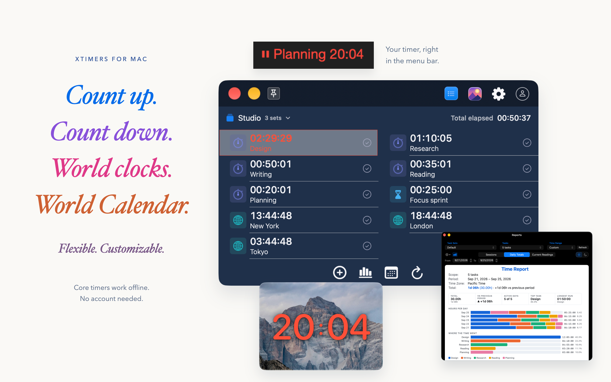
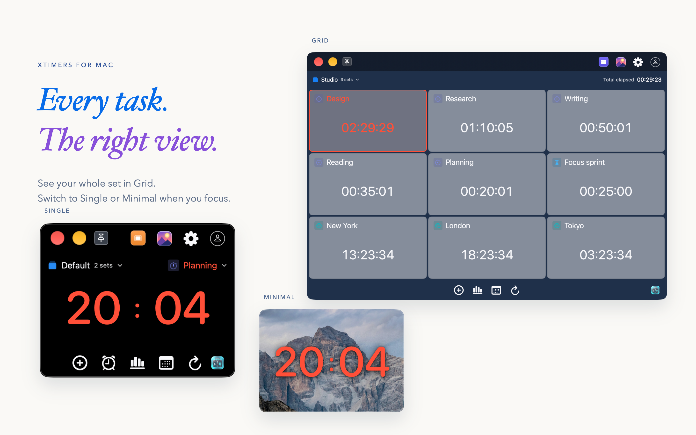
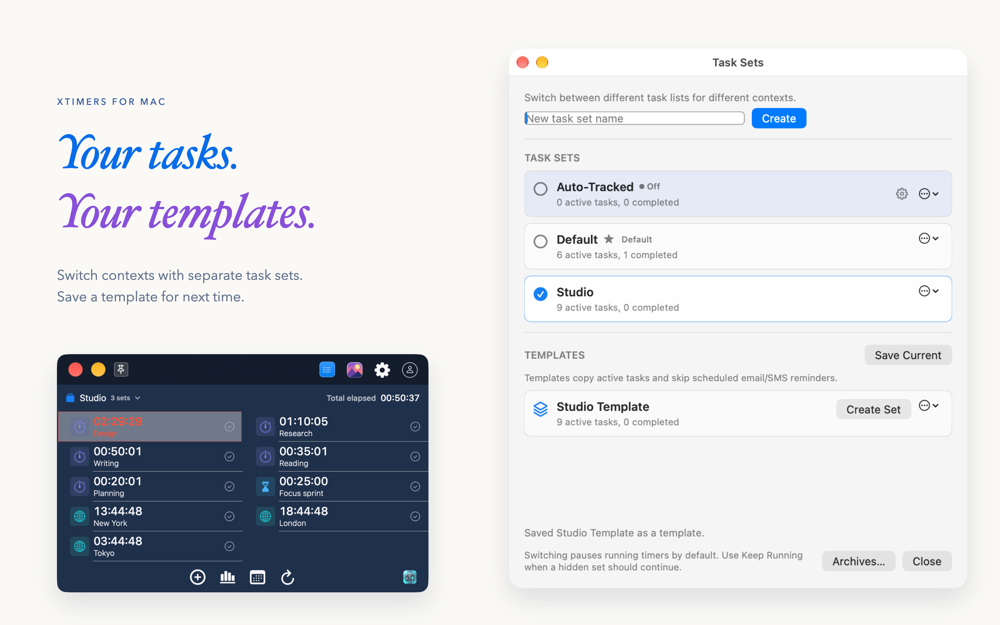
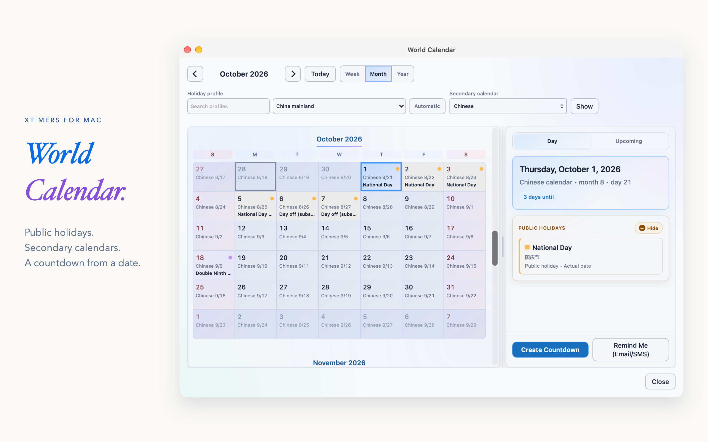
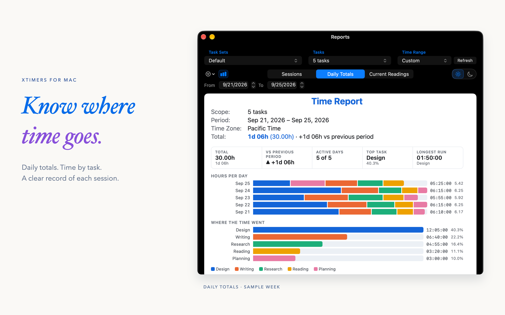
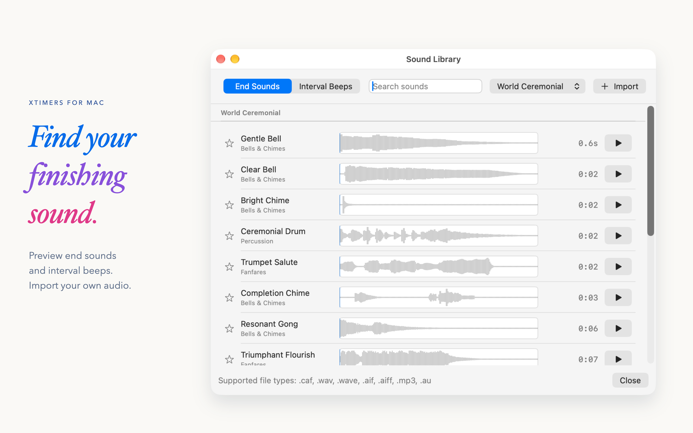
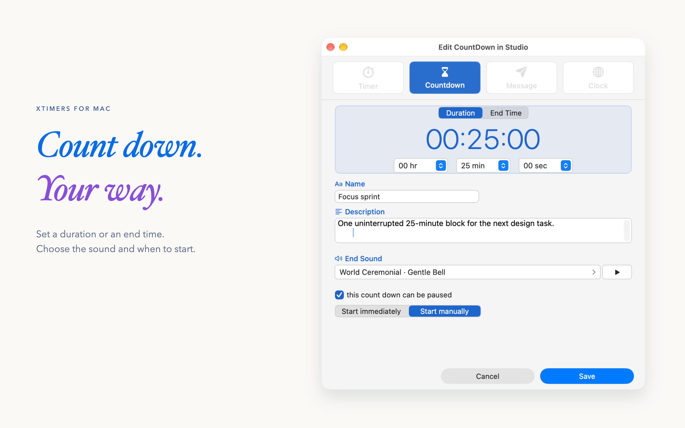
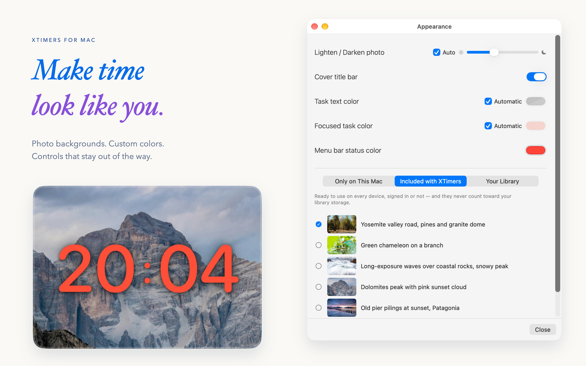
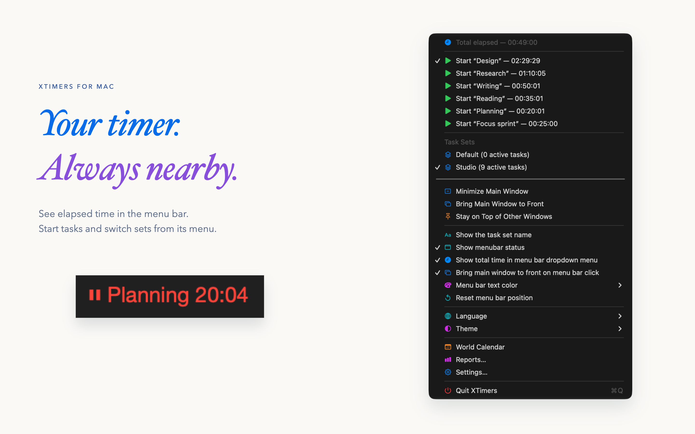
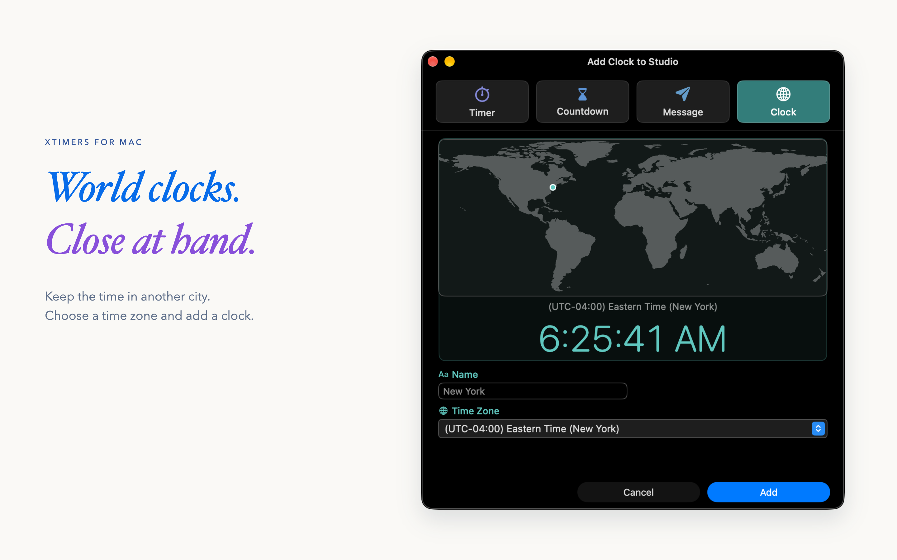

Available now
XTimers for Mac 3.4.0
Free download on the US Mac App Store.
Requires macOS 13 or later.
XTimers / Press & media
Count-up timers, countdowns, world clocks and reports. One flexible workspace for the time that matters to you.
PNG assets, a real demo, product copy & provenance.

Free download on the US Mac App Store.
Requires macOS 13 or later.
Every app screenshot in this kit shows the forthcoming version. Release date to be announced.
The mobile apps are not yet publicly available. No mobile release date is announced here.
Public availability checked September 28, 2026. Preview imagery is labeled separately.
XTimers combines named timers, countdowns, reusable task sets and world clocks. The menu-bar reading keeps a task visible while you use other Mac apps, and local reports help you review recorded time.
The Mac 3.5 candidate adds World Calendar, with regional holidays and countdowns created from dates, alongside developments to focused views, report charts and sound controls. Calendar data needs an initial download. Personal Apple Calendar events are an optional, read-only view.
The free-download fact describes the current App Store price. Connected services have their own eligibility and terms.
Source: Mac App Store listing · Download fact sheet
Copy a description, or download the extended version with availability details.
XTimers brings count-up timers, countdowns, world clocks and time reports into one flexible Mac workspace.
XTimers is a Mac app for keeping several kinds of time in view. Run count-up timers and countdowns, organize reusable task sets, keep world clocks nearby and review where your time went. Core timers and local reports work offline without an account.
Ten English compositions from genuine Mac captures.
All images: Mac 3.5 preview. Sample local data.










Image credit: Xintech LLC. Keep the Mac 3.5 preview label when reproducing these assets. View provenance and hashes
Original files, clear captions and a dated fact sheet in one portable package.
40 seconds / A real Mac workflow
Resume a task, follow its reading in the menu bar, then explore a week of sample reports.
Mac 3.5 preview · Candidate builds 151 and 152.
Silent, with English captions. The current public release is Mac 3.4.0.
The 30-hour report uses an existing sample week; it was not created during the short timer run.
No narration, music or audio track. Visible app controls, readings and charts come from native recordings; surrounding headlines and captions are editorial text. English WebVTT · Video provenance
Questions, product information or a request for additional material?
Use Xintech LLC’s existing public contact route.